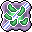
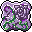
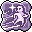
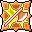
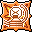
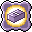
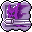
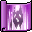
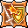
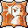

PvP Skill Changes
How some skills work differently when you fight other players.
On this page
These changes apply in Arena PvP, the Champion Battle and Knight Training.
| Skill | In PvP |
|---|---|
| Half damage. | |
| With Kensei, these skills get extra damage. Against players, that extra damage is halved. Their normal damage is unchanged. | |
| A smaller bonus for the SP spent. | |
| Elemental Rain | Each elemental hit does 75% of its damage. |
 Plant Edge |
75% damage and no Stiffness. |
 Black Rose Thorn |
 Harvest Master doesn't raise the reflected damage. Harvest Master doesn't raise the reflected damage. |
 Divine Breaker Divine Breaker |
Uses the normal DEF calculation. |
| The element DEF lasts twice as long. | |
 Vital Shot Vital Shot |
The stat-down lasts 30 seconds instead of 15. |
 Closeout |
Lasts 60 seconds at Lv 1 down to 5 seconds at Lv 5 (normally 180 down to 15). |
 Shadow Stitch Shadow Stitch |
Stiffness 25% to 45%, lasting 6 seconds at Lv 1 down to 2 seconds at Lv 5. |
 Venom Blast Venom Blast |
The Stun lasts 5 seconds instead of 15. |
 Sweep Attack |
Stiffness chance 15% to 35% (normally 50% to 90%). |
 Bumrush |
An extra 13% miss chance before the Stiffness. |
 Material Bind Material Bind |
Half the chance to take effect. |
| Artful Traps | Triggers at 15% instead of 40%. The Lv 4 Stun lasts 3 seconds instead of 10. |
 False Money |
Each debuff lands at 15% instead of 50%. |
 Expansion Arm Expansion Arm |
Clears buffs at 30% instead of 70%. |
 Weakness Shot |
Takes effect at 30% instead of 50%. |
| Freak Blast |  Mystic Silence, Mystic Silence,  Mystic Poison and Mystic Poison and  Medusa Eyes add +5% per level instead of +12%. Medusa Eyes add +5% per level instead of +12%. |
 Evaporate |
Success chance 5% + 4% × Lv (normally 10% + 10% × Lv). |
 Hate Steal Hate Steal |
Also cancels the target's cast. |
| Reflect Shield |
Triggers at most once every 3 seconds. |
 Blocking |
Can't be used while you are inside a possession. |
 Pressure |
All your Pressure fields share one limit of 3. |
| Increase Human Property Dodge |
Lowers your dodge against players instead (-3 at Lv 1 to -15 at Lv 5). |
| Engraving | The waiting mark doesn't hold players with Stiffness. |
 Head Crusher
Head Crusher Lumberjack Slash
Lumberjack Slash Swallow Snatcher
Swallow Snatcher MDEF Communion
MDEF Communion